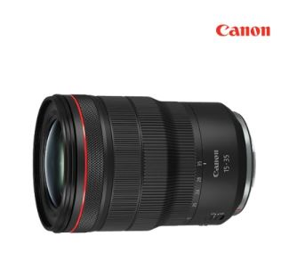
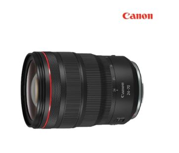
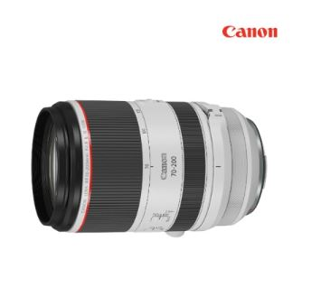

풀프레임미러리스용 / 광각줌렌즈 / 캐논RF / L렌즈(최상급) / 12군 / 16매 / 밝기:F2.8 / 최단촬영거리:28cm / 필터구경:82mm / 손떨림방지 / 방진방적 / 초음파모터 / 원형조리개 / 비구면 / 저분산 / 풍경용렌즈 / 무게:840g / SWC코팅 / ASC코팅 / 컨트롤링 / 불소코팅 / 풀타임 메뉴얼포커스

풀프레임미러리스용 / 표준줌렌즈 / 캐논RF / L렌즈(최상급) / 15군 / 21매 / 밝기:F2.8 / 최단촬영거리:21cm / 필터구경:82mm / 손떨림방지 / 방진방적 / 초음파모터 / 원형조리개 / 비구면 / 저분산 / 인물용렌즈 / 무게:900g / ASC코팅 / 컨트롤링 / 불소코팅 / 풀타임 메뉴얼포커스

풀프레임미러리스용 / 망원줌렌즈 / 캐논RF / L렌즈(최상급) / 13군 / 17매 / 밝기:F2.8 / 최단촬영거리:70cm / 필터구경:77mm / 손떨림방지 / 방진방적 / 초음파모터 / 원형조리개 / 비구면 / 저분산 / 여행용렌즈 / 무게:1070g / SWC 채용 / 듀얼나노 USM / 전자식 플로팅 포커스 컨트롤 / IS모드 3 / 컨트롤링 / 불소코팅